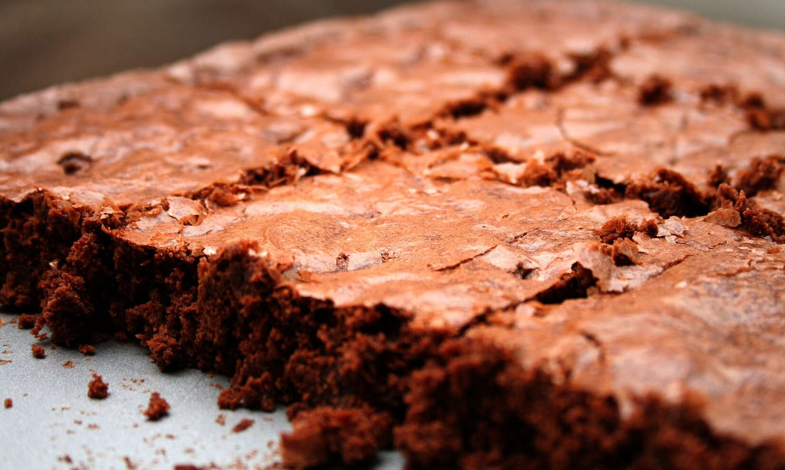

Brownies

Description
Vegetarian brownies with a crackly top made from simple ingredients.
Ingredients
- 1 cup granulated sugar
- 1 cup plain flour
- 2/3 cup cocoa powder, sifted
- 1/2 cup powdered sugar, sifted
- 1/2 cup dark chocolate chips(optional)
- 3/4 teaspoons salt
- 2 large eggs
- 1/2 cup vegetable oil
- 2 tablespoons water
- 1/2 teaspoon vanilla extract
Steps
- Preheat the oven to 160C. Line a baking dish with parchment paper and coat with oil.
- In a medium bowl, combine sugar, flour, cocoa powder, powdered sugar, add-ins, and salt.
- In a large bowl, whisk together the eggs, vegetable oil, water, and vanilla.
- Stir the dry mix into the bowl with wet ingredients until combined.
- Move the batter into the baking dish and smooth the top. Bake for 45 minutes. Cool completely before slicing.
Homepage